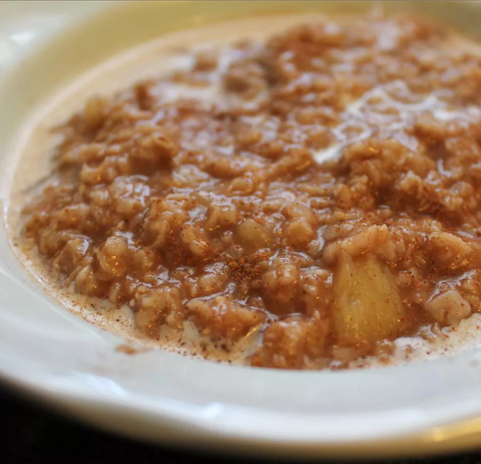

Apple Cinnamon Oatmeal Recipe

Apple Cinnamon Oatmeal
This is a wonderful, simple recipe for an apple cinnamon oatmeal. Even the
kids can make this one!
Ingredients:
- 1 cup of water
- 1/4 cup of apple juice
- 1 apple cored and chopped
- 2/3 cup rolled oats
- 1 teaspoon ground cinnamon
- 1 cup of milk
Steps:
- Combine the water, apple juice and apples in a saucepan
- Bring to a boil over high heat
- Stir in the rolled oats and cinnamon
-
Return to a boil then reduce heat to low and simmer until thick for
about 3 minutes
- Spoon into serving bowls and pour milk over the servings